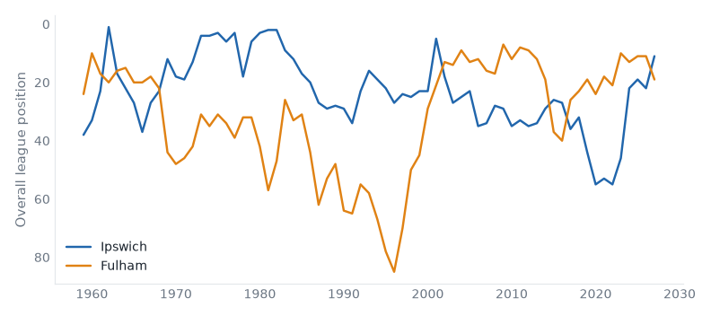
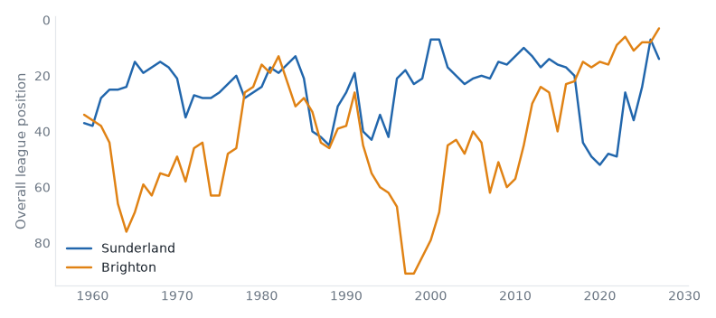
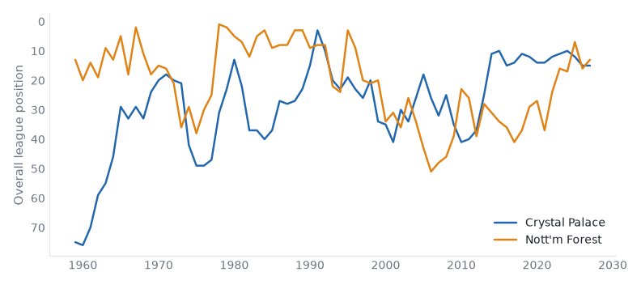
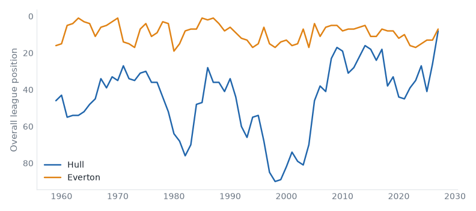
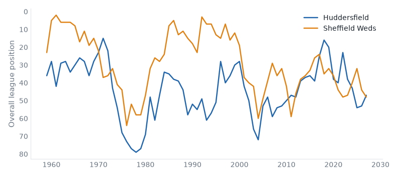
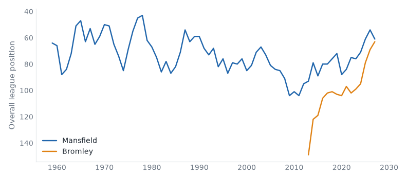

58 fixtures across 5 divisions, week of 09 October 2026.
Ipswich host Fulham in the Premier League on Saturday 10 October. Ipswich Town live between the Premier League and the Championship; this season is their highest since 2025; they sit 11th with 6 points from 5 games, form LWLLW. Fulham live between the Premier League and the Championship; they are 5 seasons into a spell 1 division above that; they sit 19th with 2 points from 5 games, form DDLLL. They have met 22 times in league play since 1958/59: Ipswich Town 7 wins, Fulham 9, 6 drawn.

|
|
Sunderland host Brighton in the Premier League on Saturday 10 October. Sunderland live between the Premier League and the Championship; they are 1 division above that this season; they sit 14th with 4 points from 5 games, form LLDWL. Brighton & Hove Albion are, on the balance of their record, a Championship club; they are 10 seasons into a spell 1 division above that; they sit 3rd with 10 points from 5 games, form WWDLW. They have met 36 times in league play since 1958/59: Sunderland 14 wins, Brighton & Hove Albion 14, 8 drawn.

|
|
Crystal Palace host Nott'm Forest in the Premier League on Sunday 11 October. Crystal Palace live between the Premier League and the Championship; they are 14 seasons into a spell 1 division above that; they sit 15th with 4 points from 5 games, form DLWLL. Nottingham Forest live between the Premier League and the Championship; they sit 13th with 5 points from 5 games, form LWDDL. They have met 52 times in league play since 1969/70: Crystal Palace 12 wins, Nottingham Forest 21, 19 drawn.

|
|
Hull host Everton in the Premier League on Sunday 11 October. Hull City live between the Championship and League One; this season is their highest since 2017; they sit 8th with 8 points from 5 games, form LDDWW. Everton have never played outside the Premier League; they sit 7th with 9 points from 5 games, form WDDDW. They have met 10 times in league play since 2008/09: Hull City 2 wins, Everton 5, 3 drawn.

|
|
Arsenal v Leeds
Sat 10 Oct · neighbours compare
Arsenal 2nd (LWWWW), Leeds United 5th (DWDDW). Three places or fewer between them.
Aston Villa v Brentford
Sat 10 Oct · 2 above level compare
Aston Villa 16th (WLDLL), Brentford 4th (WDDDW). At least one of them sits above where their record says they belong.
Chelsea v Bournemouth
Sat 10 Oct · 2 above level compare
Chelsea 10th (LDLWW), Bournemouth 17th (LDDDL). At least one of them sits above where their record says they belong.
| Sat 10 | Man United v Tottenham | compare | |
| Sun 11 | Liverpool v Man City | compare | |
| Mon 12 | Coventry v Newcastle | yo-yo club | compare |
Sheffield United v Lincoln
Sat 10 Oct · 2 above level compare
Sheffield United 18th (LLWLW), Lincoln City 13th (LWWDD). At least one of them sits above where their record says they belong.
| Fri 09 | West Ham v QPR | below level | compare |
| Sat 10 | Blackburn v Cardiff | yo-yo club | compare |
| Sat 10 | Bolton v Stoke | yo-yo club | compare |
| Sat 10 | Charlton v Bristol City | neighbours | compare |
| Sat 10 | Derby v Wrexham | 2 above level | compare |
| Sat 10 | Middlesbrough v Wolves | neighbours | compare |
| Sat 10 | Preston v Millwall | yo-yo club | compare |
| Sat 10 | Swansea v Norwich | above level | compare |
| Sat 10 | Watford v Burnley | relegated last season | compare |
| Sat 10 | West Brom v Birmingham | below level | compare |
| Sun 11 | Southampton v Portsmouth | below level | compare |
Huddersfield host Sheffield Weds in League One on Saturday 10 October. Huddersfield Town live between the Championship and League One; they are 1 division below that now; they sit 3rd with 15 points from 8 games, form WLDDW. Sheffield Wednesday live between the Premier League and the Championship; they are 1 division below that now; they sit 4th with 14 points from 7 games, form DDWWW. They have met 30 times in league play since 1958/59: Huddersfield Town 9 wins, Sheffield Wednesday 12, 9 drawn.

|
|
Mansfield host Bromley in League One on Saturday 10 October. Mansfield Town live between League One and League Two; they are 3 seasons into a spell 1 division above that; they sit 17th with 8 points from 7 games, form DDLLW. Bromley belong in the National League — 60% of their 15 recorded seasons; this season is the highest in their record; they sit 19th with 8 points from 7 games, form WDLLL.

|
|
Doncaster v Burton
Sat 10 Oct · above level compare
Doncaster Rovers 21st (WLLDD), Burton Albion 8th (LWDLD). At least one of them sits above where their record says they belong.
Leicester v Peterboro
Sat 10 Oct · fallen giant compare
Leicester City 14th (DWLWD), Peterborough United 23rd (LLDLD). Leicester City have played in the top flight.
Stockport v Barnsley
Sat 10 Oct · fallen giant compare
Stockport County 5th (WDLWL), Barnsley 18th (DLLWW). Barnsley have played in the top flight.
| Sat 10 | Bradford v Leyton Orient | fallen giant | compare |
| Sat 10 | Cambridge v Blackpool | fallen giant | compare |
| Sat 10 | Milton Keynes Dons v Reading | fallen giant | compare |
| Sat 10 | Notts County v Oxford | fallen giant | compare |
| Sat 10 | Plymouth v AFC Wimbledon | above level | compare |
| Sat 10 | Stevenage v Wigan | fallen giant | compare |
| Sat 10 | Wycombe v Luton | fallen giant | compare |
Bristol Rvs v Barnet
Sat 10 Oct · below level compare
Bristol Rovers 5th (LWLLW), Barnet 2nd (WWDDD). At least one of them sits below where their record says they belong.
| Sat 10 | Cheltenham v Salford | neighbours | compare |
| Sat 10 | Crawley Town v Chesterfield | below level | compare |
| Sat 10 | Fleetwood Town v Walsall | below level | compare |
| Sat 10 | Newport County v Colchester | yo-yo club | compare |
| Sat 10 | Oldham v Accrington | fallen giant | compare |
| Sat 10 | Port Vale v Grimsby | below level | compare |
| Sat 10 | Rotherham v Gillingham | below level | compare |
| Sat 10 | Shrewsbury v Exeter | below level | compare |
| Sat 10 | Swindon v Crewe | fallen giant | compare |
| Sat 10 | Tranmere v Rochdale | below level | compare |
| Sat 10 | York v Northampton | fallen giant | compare |
| Fri 09 | Sutton v Boreham Wood | above level | compare |
| Sat 10 | Altrincham v Aldershot | below level | compare |
| Sat 10 | Boston Utd v Southend | 2 below level | compare |
| Sat 10 | Carlisle v Kidderminster | fallen giant | compare |
| Sat 10 | Forest Green v Hartlepool | below level | compare |
| Sat 10 | Fylde v Scunthorpe | below level | compare |
| Sat 10 | Halifax v Gateshead | below level | compare |
| Sat 10 | Hornchurch v Eastleigh | 2 above level | compare |
| Sat 10 | Tamworth v Barrow | relegated last season | compare |
| Sat 10 | Wealdstone v Yeovil | compare | |
| Sat 10 | Woking v Harrogate | relegated last season | compare |
| Sat 10 | Worthing v Solihull | 2 above level | compare |
Reviewed on Monday review, tiers 1–2 and Tuesday review, tiers 3–5.
Built from the English football database, tiers 1–5 from 1958/59. Results from football-data.co.uk. Archived copy.